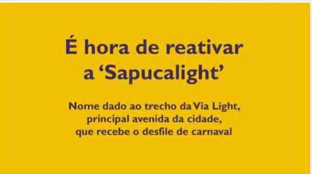

Uma memória que atravessa a avenida.
A história da LUBESNI se conecta à própria trajetória do Carnaval Iguaçuano, suas escolas, blocos, afoxés e disputas por continuidade cultural.
Marcos documentados.
Os registros abaixo foram organizados a partir do portfólio institucional. Informações futuras devem ser adicionadas com data, fonte e evidência correspondente.
Fortalecimento do Carnaval Iguaçuano
O acervo recupera o período em que o carnaval local reuniu grande número de escolas e blocos, com desfiles na Avenida Marechal Floriano e, posteriormente, na Via Light.
Fundação em 03 de setembro
A Liga da União de Blocos e Escolas de Samba de Nova Iguaçu é formalmente apresentada no portfólio como fundada em 03/09/2013.
Primeiro carnaval sob responsabilidade da LUBESNI
O registro histórico indica que os desfiles de 2014 foram os primeiros sob responsabilidade da Liga e os últimos com grupos unificados.
Carnaval, resultados e memória
O portfólio preserva resultados, fotografias e links públicos de comprovação do Carnaval de 2015 e dos anos anteriores.
Ampliação do acervo formativo
O portfólio reúne ações de maracatu, oficinas com mestres e contramestres, circulação cultural, registros do Aquilombaque e do Maracatu Tambores de Iguassú.
Projeto União dos Blocos — nº 34084
Ação registrada no Edital Bloco nas Ruas RJ, da Secretaria de Estado de Cultura e Economia Criativa do Rio de Janeiro.
Contrapartidas e novos registros
Participação de agremiações em contrapartidas dos Editais Folia RJ 3/2025 e presença de ações culturais de 2025 no portfólio.
Certificação como Organização da Sociedade Civil
A LUBESNI é cadastrada como OSC (nº 2025/0012) no Sistema Municipal de Informações e Indicadores Culturais da Prefeitura de Nova Iguaçu, com validade até 2031. Ver certificado →
Carnaval 2026 das agremiações filiadas
Desfiles e ensaios registrados de Rosa do Valverde, Arrastão do Ipiranga, União de Miguel Couto, Leão de Nova Iguaçu e cortejo do Aquilombaque. Ver dossiê →
Nova fase de estruturação
Organização de projetos de circulação, sustentabilidade, reaproveitamento de materiais e fortalecimento das agremiações filiadas, com diferenciação clara entre ações realizadas e propostas futuras.

Via Light e a ideia de “Sapucalight”
O acervo conserva materiais de mobilização que associam a Via Light à história dos desfiles locais e à retomada do carnaval como instrumento de transformação cultural da cidade.
Ver fontes e documentos